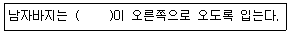

한복기능사 (2005-04-03 기출문제)
1과목: 임의 구분
1. 춘추용 한복재료로 사용하기에 가장 좋은 옷감은?
- 숙고사, 관사, 부사견 등
- 생모시, 항라, 모시 등
- 자미사, 명주, 뉴똥 등
- 숙고사, 항라, 자미사 등
(정답률: 알수없음)

2. 다음중에서 섬유를 감별할 때 연소법으로 감별하기가 어려운 섬유는?
- 면
- 모
- 아세테이트
- 합성섬유
(정답률: 알수없음)
3. 여름철 한복감으로 제일 적당한 것은?
- 명주
- 모시
- 아세테이트
- T/C혼방
(정답률: 60%)
4. 워시앤드웨어 (wash and wear)성을 가진 대표적인 섬유로 혼방 직물에 많이 이용되는 섬유는?
- 폴리에스테르계 섬유
- 폴리아미드계 섬유
- 폴리프로필렌계 섬유
- 폴리아크릴계 섬유
(정답률: 알수없음)
5. 섬유의 강도 단위로 나타내는 것은?
- %
- g/tex
- ㎏/㎜2
- denier
(정답률: 알수없음)
6. 견직물의 특성에 해당하는 것은?
- 흡습성이 좋고, 강력이 강하나 쉽게 구겨진다.
- 내구력이 강하고, 비교적 보온력이 있고, 세탁이 용이하다.
- 조직이 치밀하고, 촉감이 좋고, 우아한 광택이 있다.
- 일광에 취화가 적고, 보온력이 강하여 따뜻하다.
(정답률: 알수없음)
7. 다음 옷감의 성질 중 서로 관계없이 짝지어진 것은?
- 강도 -- 내구성
- 흡습성 -- 땀
- 드레이프성 -- 맵시
- 내추성 -- 필링
(정답률: 알수없음)
8. 천연섬유 중 동물성 섬유로 조직이 치밀하여 , 촉감이 좋고 우아한 윤택으로 품위가 있어 고급 옷감으로 많이 쓰이는 것은?
- 면직물
- 마직물
- 모직물
- 견직물
(정답률: 알수없음)
9. 물에 담구었을 때 가장 많이 강도가 저하되는 섬유는?
- 양모
- 무명
- 나일론
- 레이온
(정답률: 알수없음)
10. 다음의 섬유중에서 탄성 회복율이 가장 작은 섬유는?
- 나이론
- 레이온
- 모
- 면
(정답률: 알수없음)
11. 다음 중 조선초기 여자저고리의 특징이 아닌 것은?
- 등길이가 짧다.
- 소매는 직배래에 통수이며 길이가 길다.
- 수구에는 넓은 끝동이 있었다.
- 깃, 섶, 겨드랑이 끝동 등이 동색이었다.
(정답률: 알수없음)
12. 다음의 색료을 서로 혼합할 때 틀린 것은?
- 자주 + 노랑 = 빨강
- 자주 + 청록 = 파랑
- 노랑 + 청록 = 녹색
- 자주 + 녹색 = 검정
(정답률: 알수없음)
13. 전통적 여자 어린이 의복의 색은 어느 것인가?
- 노랑색 저고리, 다홍색 치마
- 노랑색 저고리, 초록색 치마
- 미색 저고리, 다홍색 치마
- 연분홍색 저고리, 꽃분홍색 치마
(정답률: 알수없음)
14. 다음은 저고리의 깃 만드는 방법이다. 옳지 않은 것은?
- 깃감의 안쪽에 심감을 대고 시침한 다음 깃본을 대고 그린다.
- 깃머리의 홈질한 실을 잡아당겨서 한쪽으로 주름이 몰리게 꺽어 눌러 다린다.
- 깃의 모양을 예쁘게 만들려면 빳빳한 종이로 깃본을 떠서 사용한다.
- 깃머리부분의 시접을 0.5㎝정도 남기고 둥글게 베어낸 후 시접을 촘촘하게 홈질한다.
(정답률: 알수없음)
15. 다음은 적의에 대한 설명이다. 옳은 것은?
- 내, 외명부의 대례복이었다.
- 바탕색이 검정색과 연두색이 있다.
- 세자 가례와 세손 가례 때에 빈궁법복으로 입었던 대례복이다.
- 장삼이라고도 하였다.
(정답률: 70%)
16. 다음 남자 한복중에서 전통적인 배색인 것은?
- 옥색바지 저고리, 청옥색 조끼 마고자, 초록색 두루마기
- 흰바지, 옥색 저고리, 남색 조끼, 옥색 두루마기
- 회색 바지, 옥색 저고리, 자주색 조끼 마고자, 진회색 두루마기
- 살색 바지 저고리, 갈색 조끼 마고자, 짙은 수박색 두루마기
(정답률: 알수없음)
17. 지초에서 추출되는 천연 염료의 색상은?
- 자색
- 적색
- 황색
- 남색,청색
(정답률: 알수없음)
18. 다음 중 오방색에 대한 설명이 옳은 것은?
- 개성 있는 색상이면 오방색이다.
- 음양 오행을 바탕으로 하였다.
- 황, 홍, 청, 녹, 백이다.
- 계절에 따라 달라진다.
(정답률: 알수없음)
19. 한복에서의 대칭 균형에 속하는 것은?
- 조끼, 마고자, 전복
- 두루마기
- 저고리 여밈
- 숙고사 치마에 모시 적삼
(정답률: 알수없음)
20. 색의 삼속성이 아닌 것은?
- 색광
- 색상
- 명도
- 채도
(정답률: 알수없음)
2과목: 임의 구분
21. 얇은 견직물(뉴텐)로 저고리 제작시 견사 80 D(데니어)를 사용할 때 1㎝ 간의 땀새로 가장 적당한 것은?
- 1 - 3땀
- 3 - 5땀
- 6 - 7땀
- 11 - 12땀
(정답률: 알수없음)
22. 모시 손질법으로 틀린 것은?
- 섬유 조직상 심하게 문질러 빨지 않는다.
- 식물성 섬유지만 면보다 알칼리에 약함에 유의한다.
- 가볍게 눌러 탈수한다.
- 다림질은 옷감 안쪽에서 다린다.
(정답률: 알수없음)
23. 다리미대는 다림질을 쉽게 하도록 한다. 다리미대의 덮개가 가장 부적당한 것은?
- 매끈하고 딱딱하여 주름이 없어야 한다.
- 다리미대의 덮개는 고온에 잘 견디어야 한다.
- 얼룩이 생기지 않고, 냄새나 좀벌레를 타지 않아야한다.
- 담요위에 목면천을 싸고 다리는 것이 이상적이다.
(정답률: 30%)
24. 치마 제작 시 겉주름 너비 2㎝, 허리통 80㎝, 치마폭을 210㎝ 라 하면, 주름 하나의 너비는?
- 5.8㎝
- 5.25㎝
- 4.75㎝
- 4.9㎝
(정답률: 알수없음)
25. 재봉틀로 바느질할 때 주름에 대한 설명 중 옳지 않은 것은?
- 풀치마 주름너비는 1㎝ 정도가 알맞다.
- 주름은 겉자락쪽에서 안자락쪽으로 넘어지게 만든다.
- 통치마 아귀가 있는 맨끝은 겹쳐지므로 주름을 잡지 않는다.
- 주름 방향은 오른편으로 잡는 것이 잡기에 편하다.
(정답률: 알수없음)
26. 재봉틀의 기구(sewing motion) 중 보내기 기구는?
- 바늘대기구
- 루우퍼기구
- 나이프기구
- 노루발기구
(정답률: 알수없음)
27. 경수(센물)의 설명으로 맞는 것은?
- 표면 장력이 큰 물을 뜻한다.
- 비누의 용해도가 큰 물을 뜻한다.
- Ca, Mg, Fe 등의 금속을 함유하는 물을 뜻한다.
- 일반적으로 빗물을 뜻한다.
(정답률: 34%)
28. 두루마기의 밑단 시접은?
- 1.5∼2㎝
- 2∼3㎝
- 5∼6㎝
- 8∼9㎝
(정답률: 알수없음)
29. 저고리를 만들 때 시접이 가름솔인 것은?
- 겉섶
- 어깨솔기
- 진동
- 깃
(정답률: 31%)
30. 다음 저고리 중 세탁시 시접이 가장 안전하게 된 것은?
- 솜 저고리
- 겹 저고리
- 박이 겹저고리
- 모시 적삼
(정답률: 알수없음)
31. 저고리의 제도를 설명한 것으로 옳지 못한 것은?
- 삼회장 저고리는 진동선이 길 쪽으로 옮겨져 소매길이가 길다.
- 민저고리의 화장은 치수 그대로 사용한다.
- 곁마기는 제도를 해 옷감 위에 놓고 식서에 맞춰서 마름질한다.
- 깨끼저고리를 색동으로 제도할 때 색동선은 꼭 그려서 한다.
(정답률: 알수없음)
32. 한복 겹치마 단의 시접 방향은?
- 가름솔로 한다.
- 쌈솔로 한다.
- 단쪽으로 꺾는다.
- 겉쪽으로 꺾는다.
(정답률: 알수없음)
33. 얼룩빼기 방법으로 틀리게 설명된 것은?
- 파라핀: 신문지를 놓고 다린 다음 증열 처리한다.
- 혈액: 암모니아수로 닦은 다음 흰색은 표백한다.
- 홍차: 비눗물로 닦은 뒤 증열 처리한다.
- 잉크: 3%정도의 수산용액으로 처리한다.
(정답률: 50%)
34. 면이나 마직물의 엷은 감을 재봉할 때 실의 굵기는 얼마가 적당한가?
- 면사 60 - 80번수
- 모사 50 - 60번수
- 견사 100 - 80 Denier
- 면사 40 - 60 Denier
(정답률: 알수없음)
35. 재봉틀에서 최후에 실을 끼는 것은?
- 실채기
- 바늘
- 북
- 실조절기
(정답률: 알수없음)
36. 두루마기를 재봉할 때 주의해야 할 점이 아닌 것은?
- 무는 사선을 길 쪽에 단다.
- 무재단 길이는 두루마기 길이에서 진동을 뺀 후 위 아래 시접을 준 길이로 재단한다.
- 필요치수는 가슴둘레, 두루마기길이, 화장 등이다.
- 깃, 섶 등에 심을 넣지 않는 것이 바느질에 편안하고 옷을 완성 후 반반하다.
(정답률: 알수없음)
37. 전복의 옆트임 치수로 적합한 것은?
- 2‾3cm
- 3‾4cm
- 7‾8cm
- 10‾18cm
(정답률: 알수없음)
38. 장식을 겸한 바느질로 홑옷의 가름솔 위, 조끼의 장식박음 적삼이나 고의 등 박이옷에 많이 쓰이는 바느질은?
- 가름솔
- 통솔
- 곱솔
- 상침박기
(정답률: 알수없음)
39. 양단으로 홑치마를 만들 때 치마단은 어떻게 하는 것이 좋은가?
- 상침박기
- 홈질하기
- 공그르기
- 감치기
(정답률: 알수없음)
40. 수산에 처리하여 가장 깨끗하게 될 수 있는 얼룩은?
- 쇠녹
- 곰팡이
- 고추장
- 단백질
(정답률: 25%)
3과목: 임의 구분
41. 가장자리를 장식하는 상침으로 손바느질의 명칭은?
- 고운 홈질
- 온 박음질
- 보통 시침
- 장식 상침
(정답률: 알수없음)
42. 옷을 장기간 보관시 푸새를 하지 않는 이유는 ?
- 구김살을 막기 위해
- 접는 부분이 부러지는 것을 막기 위해
- 빳빳하지 않도록 하기 위해
- 해충의 피해를 막기 위해
(정답률: 알수없음)
43. 남자 조끼 마름질 방법에 대한 설명으로 적당하지 않은 것은?
- 조끼는 옷 본 모양대로 곡선 재단한다.
- 겉감으로 안단과 주머니 입술 감을 마른다.
- 110cm 폭 소요량은 조끼 길이 × 2 + 시접
- 각 부분의 시접은 1∼1.5cm정도로 한다.
(정답률: 20%)
44. 한복감에 풀먹이는 방법이 맞지 않는 것은?
- 풀을 곱게 개어 고운체에 받쳐 놓는다.
- 풀 먹일 옷감은 바짝 마른 것이 좋다.
- 옷감을 넣고 풀이 속까지 베어 들도록 골고루 문질러 꼭 짠다.
- 다듬이질 할 것은 풀의 농도를 세게하고 다림질 할 것은 약하게 한다.
(정답률: 알수없음)
45. 레이온을 세탁할 때 반드시 피해야 할 것은?
- 중성 세제
- 직사 일광
- 심하게 비틀어짜기
- 드라이클리닝
(정답률: 알수없음)
46. 한복에 맞는 장신구의 종류가 아닌 것은?
- 반지
- 노리개
- 비녀
- 목걸이
(정답률: 알수없음)
47. 오방장이란 무엇인가?
- 머리에 쓰는 관이다.
- 방한용 덧저고리이다.
- 어린이 두루마기이다.
- 예복용 신의 일종이다.
(정답률: 40%)
48. 조선시대 문무관이 융복으로 착용했던 포의 명칭은?
- 전복
- 철릭
- 답호
- 창의
(정답률: 알수없음)
49. 예장을 갖출 때 착용하는 치마가 아닌 것은?
- 대란치마
- 스란치마
- 두루치
- 대슘치마
(정답률: 알수없음)
50. 신라 태종 때 당(唐)의 복식이 우리나라에 유입되어 조선 조까지 전승된 부녀예복은?
- 원삼
- 당의
- 대란치마
- 활옷
(정답률: 알수없음)
51. 고려시대 민서 여복에 관한 설명으로 맞는 것은?
- 머리모양은 출가하기 전에는 흑라로 묶었고 그 나머지는 뒤에 내렸다.
- 몽수는 귀녀들만 사용하는 쓰개였다.
- 민서 부녀들도 선군을 입었다.
- 선군은 7합무지기 속치마였다.
(정답률: 알수없음)
52. 다음 중 조선왕조시대 백관의 조복과 관계가 없는 것은?
- 폐슬
- 적초의상
- 흉배
- 백초중단
(정답률: 60%)
53. 다음 중 조선조 백관복의 제도에 속하지 않는 것은?
- 조복
- 편복
- 제복
- 상복
(정답률: 19%)
54. 치장하고자 하는 욕구를 충족시키기 위하여 의복을 착용하게 되었다고 보는 견해는?
- 비정숙설
- 정숙설
- 장식설
- 보호설
(정답률: 알수없음)
55. 다음 중 조선시대의 왕의 조복(朝服)은?
- 원유관에 곤룡포
- 면류관에 곤복
- 원유관에 강사포
- 익선관에 곤룡포
(정답률: 알수없음)
56. 남자(男子)바지 입는 법으로 옳은 것은?

- 큰 사폭
- 작은 사폭
- 마루폭
- 사폭솔기
(정답률: 알수없음)
57. 전통적인 한복의 배색이 아닌 것은?
- 다홍색 치마에 초록색 저고리
- 남색 치마에 분홍색 저고리
- 자주색 치마에 옥색 저고리
- 초록색 치마에 노랑 저고리
(정답률: 알수없음)
58. 노리개는 계절에 따라 패용하는 것이 다르다. 8월 보름에 패용했던 노리개는?
- 비취 노리개
- 옥 노리개
- 삼작 노리개
- 옥장도 노리개
(정답률: 알수없음)
59. 다음 중 치마색의 설명으로 맞는 것은?
- 출가해서 아기를 낳을때까지는 주로 남치마를 입는다
- 중년이 되면 옥색계통을 주로 입는다.
- 내외가 공존하는 이는 아무리 늙어도 큰 일이 있을 때에는 남치마로 입는다.
- 과부는 회색계통을 입는다.
(정답률: 알수없음)
60. 조선조 백관의 조복(朝服)과 제복(祭服)은?
- 조복에는 적초의, 제복에도 적초의
- 조복에는 적초의, 제복에는 청초의
- 조복에는 청초의, 제복에도 청초의
- 조복에는 청초의, 제복에는 적초의
(정답률: 알수없음)